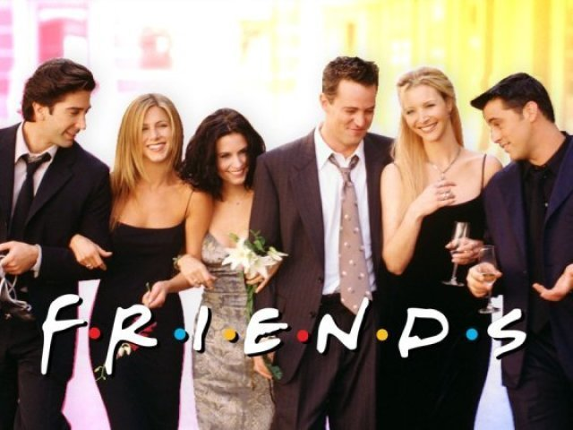
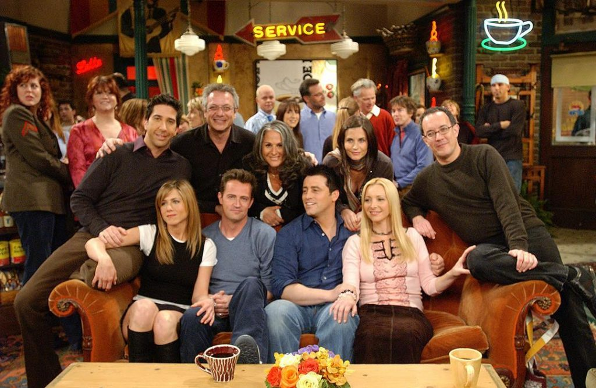

Friends é uma sitcom americana criada por David Crane e
Marta Kauffman e apresentada pela rede de televisão NBC
entre 22 de setembro de 1994 e 6 de maio de 2004. A
série girava em torno de um grupo de amigos que vivia
no bairro de Greenwich Village, na ilha de Manhattan,
na cidade de Nova York. A série foi produzida pela
Bright/Kauffman/Crane Productions em associação com a
Warner Bros Television.
Kauffman e Crane começaram a desenvolver Friends sob o
título de Insomnia Cafe em novembro de 1993. Kauffman e Crane
apresentaram a ideia a Bright, com quem tinham trabalhado
anteriormente, e, juntos, apresentaram o projeto para a
NBC. Após várias regravações e alterações, a série foi
finalmente nomeada de Friends e estreou no cobiçado bloco
Must See TV da NBC.

